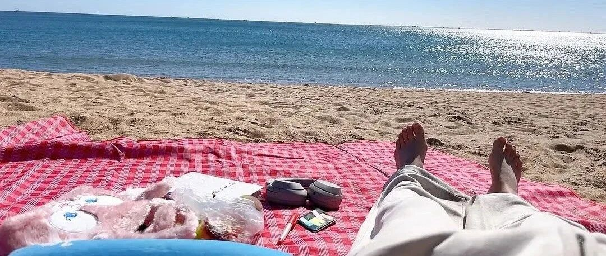

财务自由后，有12个问题
点击关注 秋秋在分享
一起实现财务自由退休
大家好，我是秋秋呀～
最近大老王推荐一个很好用的思维方法-费曼12个问题法。
它能帮你集中注意力，完成任何你想做的事，甚至在外人眼里，你就像个天才。
怎么做呢？就是在事情开始前问自己12个问题。
也可以是关注的领域，写下12个重点。

脑子里装着12个最想解决的问题，大多数时候这些问题处于“休眠状态”，每获得一个新信息，你把它这些问题挨个做对比，看是否帮你解决问题。
长此以往，你迟早会遇到一个新的信息能帮你突破一个大难题，就这么简单。
但在外人眼里，你看起来像个天才。
比如我财务自由之后最关心:
1. 如何保持新鲜感？
2. 如何维持亲密关系质量？
3. 如何保持自由？
4. 如何处理亲子关系？
5. 如何探索世界 ？
6. 如何继往圣之绝学？
7. 如何保持健康 ？
8. 如何弥补缺点？
9. 如何在fire领域创造自己的价值？
10. 如何培养输出型爱好？
11. 如何保护好自己的财产？
12. 如何扩大影响力？
这12个问题也就是我退休生活的主线了！
我做的一切事都围绕它们。
根据deepseek关于财务自由后建议做的100件事，我又分成三大类。也给出了我的答案。
大家财务自由后，也可以参考。
第一类：个人发展与实践
1. 我想探索世界
- 漫步海南椰林沙滩
- 去西双版纳热带雨林徒步
- 探访东北冰雪世界
- 领略山西古建筑文化
- 在新疆吐鲁番吃葡萄西瓜
- 体验内蒙古草原生活
- 走进四川大熊猫基地
- 体验日本京都文化
- 领略新西兰自然风光
- 感受北欧的浪漫风情
2. 我想学习与成长
- 阅读豆瓣前100书籍电影
- 报名老年大学学书法/国画
- 学习一到两门语言并能会话
- 参加志愿者活动增强社会责任感
- 学习摄影记录生活与世界
- 尝试园艺种植花草
- 写一本书或者个人传记
- 学习新媒体运营扩大影响力
- 阅读法律知识保护自身权益
- 学习急救知识考取证书
3.我想挑战与冒险
- 参加12小时公益徒步
- 完成100公里户外骑行
- 尝试野外树降体验
- 坐绿皮火车慢游边疆线
- 跑完人生第一场马拉松
- 攀登五岳打卡纪念
- 参加一次潜水探险
- 学冲浪征服初级浪区
- 自驾国内最美公路（如318川藏线、海南环岛公路）
- 体验房车露营看遍四季星空
4. 我想艺术与创作
- 成为博主记录生活
- 当化妆师定制风格造型
- 写连载小说投稿杂志
- 建立迷你家庭博物馆
- 改造旧家具赋予新生
- 开展个人摄影展览
- 参加业余乐队街头演出
- 设计文创产品赠亲友
- 画市井人物速写
- 录播客分享人生故事
第二类：社会关系与责任
5.我要亲子与家庭
- 定期举办亲子户外探险日
- 每晚亲子游戏和谈心时间
- 每月举办家庭主题聚餐日
- 为家人制作一本家庭相册
- 建立家庭图书馆每月共读计划
- 每年安排家庭旅行&运动会 &文艺晚会
- 为父母改造适老化住宅
- 建立家庭成员成长基金池
- 组织家族传统美食制作大赛
- 开设家庭矛盾调解工作坊
6.我要慈善与社会责任
- 成为一家非营利组织的志愿者
- 资助山区儿童完成学业
- 领养流浪动物并参与救助
- 捐赠流动图书进乡村
- 组织旧物改造环保市集
- 认养城市绿化做园丁
- 资助非遗手艺传承计划
- 参与残疾人援助活动
- 开办老年人技能培训班
7.我要商业与财务
- 控制风险保持财务稳定
- 开始自己的小生意
- 运营读书会社群
- 参加一次商业策略课程认识新朋友
- 做小众旅行路线测评
- 投资旧房改造项目
- 运营宠物主题民宿
- 开手作体验工作室
- 承包果园做采摘园
- 开发旅居生活APP
第三类：生命质量与传承
8.我的身体与心理健康
- 每周两次健身塑形
- 每年做全套健康体检
- 学习营养学并制定健康饮食计划
- 养一只疗愈小狗共同生活
- 学习瑜伽或太极
- 参加心理学健康讲座
- 练习冥想
- 购置全套智能健康监测设备
- 建立家庭汗蒸房+按摩室
9.我的生活方式升级
- 建立衣橱胶囊系统
- 租住豪华公寓汽车体验
- 定制智能家居系统
- 每月请家政深度保洁
- 请营养师调配健康饮食方案
- 购置顶级寝具改善睡眠
- 打造家庭影音室
- 定期衣物断舍离捐赠
- 安装全屋净水系统
- 建立自己家的有机菜园
10.我的精神与传承
- 定期寺庙禅修清心
- 在沙漠中植树打造绿洲
- 参与考古项目挖掘文明遗迹
- 抄写典籍制作线装书
- 修复老家传老物件
- 学习周易风水知识
- 撰写人生智慧手册传给后代
- 建立个人纪念馆或档案馆
- 录制“给未来子孙的视频信”
- 找到能超越生命的人生价值
每次问自己12个问题，就很容易拉回主线。
财务自由后，我大部分的时间都围绕自己，个人成长 家庭与社会关系 生命质量与传承，就是我的人生主线了。
如果还在上班，我可能没有时间做这些事。但也正是工作中一次次的对自己提问，我真的想一辈子上班吗？我想过什么样的生活？才有了现在的自己。
一起提问吧，不管是工作生活还是退休，从费曼12个问题开始。